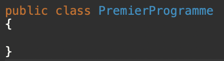
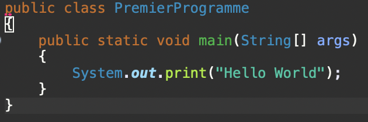
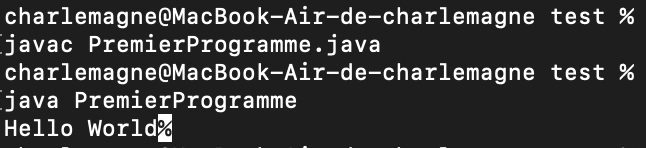
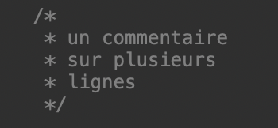

Le fichier ayant comme extension .java contient une classe qui doit rigoureusement avoir le même nom que votre fichier et commencer par une majuscule. Dans mon cas, je vais créer un fichier appelé PremierProgramme.java contenant une classe nommée PremierProgramme.
Une fois le fichier créé, nous allons devoir créer une méthode main qui sera le point d’entrée de notre programme. Sans cette méthode le programme ne fonctionnera pas.
Nous reviendrons prochainement sur la composition de cette méthode. La ligne System.out permet d’afficher le message entre guillemets dans le terminal. Pour se faire il faut dans un premier temps depuis le terminal vous diriger dans le dossier où se trouve votre programme. Une fois cette étape réalisée vous devrez taper la commande : javac NomClasse.java pour compiler votre programme puis : java NomClasse pour l’exécuter.
La ligne N°1 de la capture ci-dessus est la classe nommée PremierProgramme qui va contenir nos méthodes, dont main. Ces méthodes doivent êtres entre l’accolade de la ligne N°2 et celle de la ligne N°7 qui délimitent la portée de notre classe. Le premier mot clé de la première ligne indique que l’accès à cette classe est possible depuis n’importe quelle autre classe car celle-ci est « public » et non pas « private », « restricted » ou « package ».
Mots clés |
Informations associées |
| String[] args | Est le paramètre de la méthode principale, args est donc un tableau de type String. |
| public | Modificateur d’accès qui définit qui peut accéder à cette méthode ou non. Public permet à toutes les autres classes d’accéder à celle-ci. |
| static | Mot clé qui signifie que la méthode ou la variable n’est pas liée à une instance mais à une classe. La méthode est donc accessible sans créer l’instance d’une classe. |
| void | Utilisé pour définir le type de retour de la méthode, void indique que la méthode ne renverra aucune valeur. |
| main | Nom de la méthode recherché par la JVM comme point de départ du programme. |
Les commentaires sont une ou plusieurs lignes de texte qui ne seront ni compilées ni interprétées servant à donner des informations sur ce que vous avez codé.
Il existe le commentaire sur une ligne :
Ainsi que le commentaire sur plusieurs lignes :
Analysons cette ligne de notre premier programme :
Mots clés |
Informations associées |
| System | System est une classe native liée au système. |
| Out | Attribut, c’est donc une variable qui appartient à une classe. |
| Fonction permettant d’afficher en sortie un contenu entre guillemets. Possibilité d’écrire println au lieu de print pour afficher le texte sur une nouvelle ligne. | |
| "Hello World" | Message à afficher. |
| ; | En Java chaque instruction se termine par un point-virgule. |
Caractères spéciaux |
Informations associées |
| \n | Nouvelle ligne |
| \t | Tabulation |
| \r | Retour chariot |
| \b | Retour arrière |
| \f | Nouvelle page |